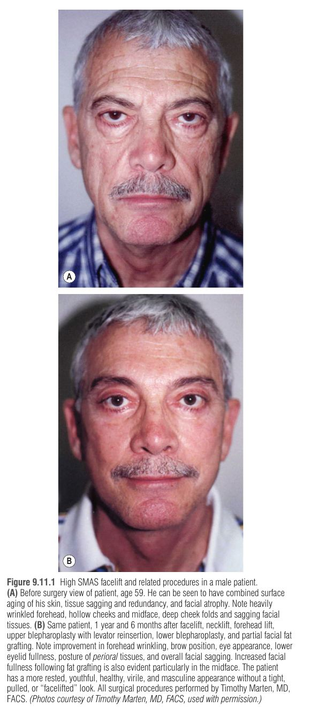
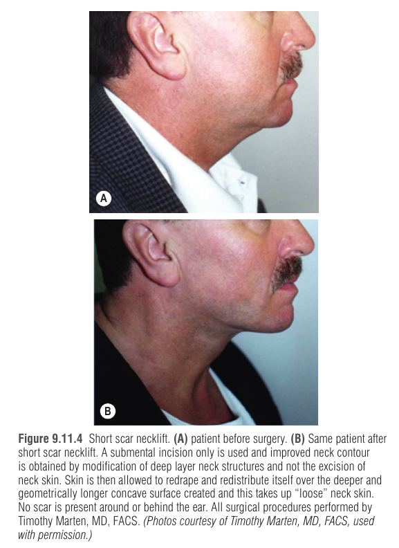
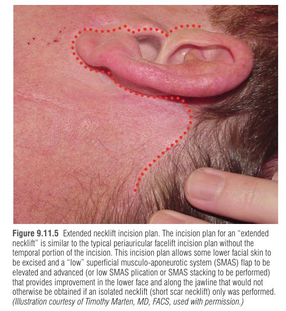
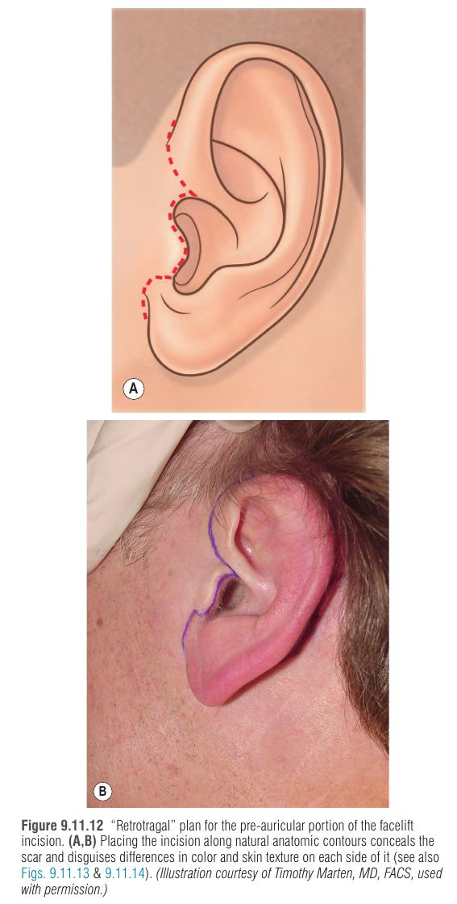
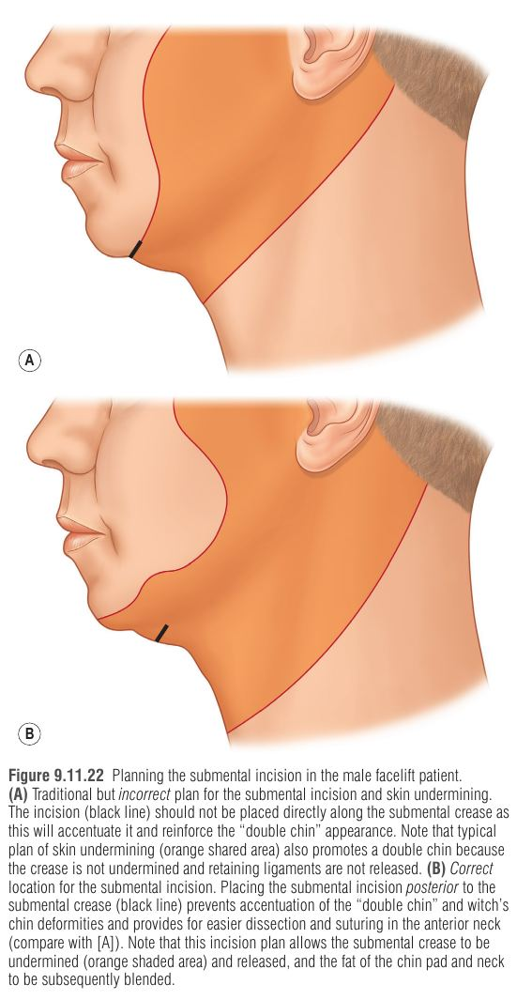

יותר ויותר גברים פונים להתחדשות פנים, אבל מרווח הטעות אצל גבר קטן יותר: אין שיער ארוך או איפור שמסתירים צלקות, והחברה שופטת בחומרה גבר שנראה "מתוח" או "מנותח". לכן אי אפשר פשוט להעתיק טכניקות שפותחו לנשים – המטרה אחרת (מראה טבעי, גברי, "לא מנותח"), והפרטים הטכניים (חתכים, זקן, דימום) אחרים.
אשה: פנים אובליות הפוכות, לחי גבוהה, גבה מקושתת, עור חלק · גבר: פנים מלבניות "כבדות למטה", קו לסת נועז, צוואר אתלטי, גבה נמוכה ואופקית, לחי שטוחה יותר, עור פחות "מטופח".
הזדקנות גברית נתפסת חלקית כ"ניסיון, חוכמה וכוח" שגברים לא רוצים לאבד. לכן: מנתח שמספק צוואר וקו לסת טובים, צלקות מוסתרות, ואיפוק בעיניים/מצח/פה – יצליח; מנתח שמגזים באזור העין ולא משפר צוואר – ייכשל.
| רכיב ההזדקנות | טיפול מתאים | מה קורה אם מטפלים לא נכון |
|---|---|---|
| 1. הזדקנות פני העור (קמטים, פיגמנט) | פילינג, resurfacing, נוירומודולטורים – מעט גברים זו תלונתם העיקרית | — |
| 2. צניחה ועודף רקמה (רוב הגברים) | מתיחה ניתוחית של השכבה העמוקה – SMAS facelift | טיפול עורי בלבד → "חלק אבל צונח" (smooth-saggy); מיני-ליפט/חוטים/short scar → תיקון לא מספק |
| 3. אטרופיה / התרוקנות נפח | השתלת שומן עצמי (fat grafting) – ייתכן אפקט מחדש של תאי גזע | מתיחה בלבד → מראה "geezer" חלול ושברירי; מילוי שומן בלבד בפנים צונחות → פנים גדולות ומנופחות |
השילוב SMAS facelift + השתלת שומן מתקן גם צניחה וגם אטרופיה, ונותן תוצאה טובה מכל אחד לבד. "עדיף פנים בצורה צעירה עם כמה קמטים מאשר פנים חלקות וצונחות".

| מטופל | אסטרטגיה |
|---|---|
| קירח / שיער קצר ("צבאי") | אפשר אותה תוכנית חתכים רגילה – גם שיער דליל וקצר נופל על הצלקת ומסתיר אותה. מצח: small-incision/אנדוסקופי, חתך בקמט מצח אופקי, או חתך מעל הגבה (supraciliary) |
| ראש מגולח | לנצל את העובדה שהצוואר הוא ה"מאפיין הגברי" המרכזי: Short scar necklift (חתך תת-סנטרי בלבד) + שומן, הרמת גבה ישירה, כריתת קפל נזולביאלי, עפעפיים שמרניים. אם צריך לכרות עור: extended necklift עם קיצור/ביטול החלק העורפי |
| "פוביה" מהמילה facelift | לקרוא לזה "extended necklift": חתך פריאוריקולרי רגיל בלי החלק הטמפורלי; מאפשר SMAS נמוך וכריתת עור בלחי התחתונה, לסת וצוואר – ללא שיפור לחי עליונה/מידפייס (פשרה קבילה בגבר) |
| Short scar facelift בגבר | בעייתי: הזזת עור אנכית → צורך בהרמת רקה/מצח, קמטוט (puckering) בחתך הרקה/פוסט-לובולרי, והעלאת קמטי צוואר עמוקים ללחי. קיצור הצלקת מאחורי האוזן (שם היא ממילא מוסתרת) על חשבון הצוואר – "ערך מפוקפק" |
Short scar necklift – איך הצוואר משתפר בלי לכרות עור? דרך חתך תת-סנטרי מבצעים ליפקטומיה תת-פלטיזמלית, הקטנת בלוטת תת-לסתית, מיוקטומיה חלקית של הדיגסטריק ופלטיזמה-פלסטיקה. נוצר משטח קעור וארוך יותר גאומטרית, והעור "נבלע" בו – הוא נפרש מחדש על המתאר העמוק. יעיל אצל גברים עד שנות ה-60.
איור 1: סכמה של חתכי ה-facelift בגבר (לא בקנה מידה). הרעיון המאחד: להניח צלקת על "ממשקים אנטומיים" טבעיים ולא לנסות "להחביא" אותה בתוך השיער באופן שמזיז קו שיער.
| אזור | המלכודת המסורתית | התוכנית הנכונה בגבר – ולמה |
|---|---|---|
| רקה | חתך בתוך קרקפת הרקה → עקירת פאה וקו שיער אחורה/למעלה = מראה "נשי" ומסגיר | בגבר עם עודף עור לחיים משמעותי: חתך לאורך קו השיער, בצורה זוויתית (מהדהד את צורת הפאה הגברית; באשה – קשת רכה). לא לעלות מעבר למפגש קו השיער הטמפורלי עם הפרונטוטמפורלי (השיער שם צומח אחורה → צלקת גלויה). חתך בתוך הקרקפת מתאים רק לגבר צעיר עם רפיון קל ושיער רקה עשיר |
| לפני האוזן | חתך פרה-טרגלי → מעבר חד בין עור אוזן חיוור-חלק לעור לחי אדום-גס; "ממתג" את המנותח | רטרו-טרגלי – לאורך השוליים האחוריים של הטראגוס: הצלקת נראית כ"הבהוב אור" (highlight) טבעי. החלק העליון – קשת רכה מקבילה לשפת ההליקס. בתחתית הטראגוס לפנות קדימה ואז למטה (לא "lazy S" – יוצר טראגוס "קטוע") |
| זקן על הטראגוס | — | אם SMAS מבצע את ההרמה (ולא מתח עור), הזזת העור קטנה ואין זקן על הטראגוס. בהזזות גדולות: אפילציה תוך-ניתוחית של זקיקים מהצד הפנימי של המתלה (מגנפיקציה, קוטר Colorado בעוצמה נמוכה, רק על הזקיק – אחרת נמק). אלקטרוליזה – לחכות 4–6 חודשים |
| סביב האונה | חתך בתוך הסולקוס → אונה דקה "נתקעת" בלחי עבה עם זקן | 2–3 מ"מ מתחת לסולקוס (נמוך יותר מבאשה) – משמר רצועת עור חסרת זקן = מראה טבעי + קל לגלח |
| מאחורי האוזן | חתך גבוה על הקונכה → צלקת היפרטרופית, webbing, מחיקת הסולקוס, זקן על גב האוזן | 2–3 מ"מ אחורי לסולקוס האוריקולו-מסטואידי; חוצה את המסטואיד בגובה נקודת ההתפצלות של ה-crura (שם ההליקס "נוגע" בקו השיער בפרופיל). נמוך מדי → גלוי; גבוה מדי → וקטור אנכי מדי ופגיעה בשיפור הצוואר |
| עורף | חתך רוחבי לתוך הקרקפת → "notching" ומדרגה בקו השיער (עור צוואר נכנס לאזור שעיר) | חתך לאורך קו השיער העורפי, מאפשר כריתה בווקטור אחורי-עליון. אורך: קצר (wattle קטן) / בינוני / ארוך (קשיש, wattle גדול). חתך רוחבי רק לצעיר שלא צריך כריתת עור |
| תת-סנטרי | בתוך הקפל התת-סנטרי → מחזק את ה"סנטר הכפול", חשיפה גרועה | 1–2 ס"מ אחורי לקפל (בערך באמצע בין המנטום להיואיד), ישר, ~3–3.5 ס"מ, מקביל לזקיקי הזקן; מאפשר שחרור הקפל ו-witch's chin |
Dr. Claytor מסביר את ההבדלים בין מתיחת פנים בגבר ובאשה – מטרות אסתטיות, חתכים ותוצאות.




המצח מזדקן → הגבה יורדת → עור שמתחת לגבה נכנס לחלל הארובה → נראה כעודף עור בעפעף (אשליה) = pseudoblepharochalasis
הטעות השכיחה ביותר: בלפרופלסטיה עליונה כשבעצם צריך הרמת מצח. למה זה מחמיר? הגבר מרים את גבותיו כל הזמן (פרונטליס) כדי "לפנות" את העפעף. ברגע שכורתים עור עפעף – הגירוי להרמת הגבה נעלם, הפרונטליס נרפה, הגבה יורדת עוד, ועודף-העור המדומה חוזר → מראה עצוב/עייף/אדיש יותר.
תוצאת ה-facelift בגבר נשפטת בעיקר לפי הצוואר – צוואר מוגדר משדר בריאות, כושר, כוח והחלטיות. ליפוסקשן תת-סנטרי + מתיחת עור אינם מספיקים, כי הם מתעלמים מהבעיות העמוקות השכיחות בגברים:
| בעיה עמוקה | טיפול דרך החתך התת-סנטרי |
|---|---|
| רפיון פלטיזמה ורצועות | Platysmaplasty |
| שומן תת-פלטיזמלי עודף | ליפקטומיה תת-פלטיזמלית |
| בלוטות תת-לסתיות גדולות | הקטנה חלקית של הבלוטה |
| היפרטרופיה/מיקום לקוי של הבטן הקדמית של הדיגסטריק | מיוקטומיה חלקית |
| שלד: לסת/סנטר קטנים | שתל סנטר – רק אם יש מיקרוגניה |
Z-plasty קדמי גדול בצוואר – להימנע: צלקת גלויה, לעיתים היפרטרופית, וכיוון צמיחת זקן לא תקין. שתל סנטר מטפל במיקרוגניה (קביעה צפלומטרית), לא בצוואר רע; שתל ללא מיקרוגניה = טעות אמנותית. סנטר גברי: רחב, מרובע, גבוה יותר; שומן מוסיף גובה אנכי, שתל – הקרנה (ומונע סולקוס לביומנטלי עמוק מדי).
דימום והמטומה: גברים נוטים יותר לדימום והמטומה מנשים (פנים מרובות כלי דם בגלל זקיקי זקן, ויתר לחץ דם שכיח ולעיתים לא מאוזן). לכן תוכנית פרואקטיבית ללחץ דם:
| תרופה | מינון/עיתוי | מנגנון ולמה |
|---|---|---|
| Atenolol | 12.5–25 מ"ג PO לפני הניתוח | חוסם β1 סלקטיבי – מוריד דופק ותפוקת לב, מקהה את תגובת הסטרס |
| Clonidine | 0.1–0.3 מ"ג PO לפני הניתוח | אגוניסט α2 מרכזי – מפחית טונוס סימפתטי, גם מרגיע |
| Labetalol | 5–10 מ"ג IV כל 10 דק' לפי צורך | חוסם α+β – טיפול תוך-ניתוחי בעליות. יעד: MAP בטווח 10–15% מהערך הטרום-ניתוחי |
לא להשתמש בהרדמה היפוטנסיבית – מסתירה נקודות דימום (שיפתחו אחר כך → המטומה) ויש ראיות לפגיעה קוגניטיבית.
הסבר על תכנון חתכי פייסליפט בגבר – מיקום סביב האוזן והתחשבות בזקן.
B – Bleeding: יותר המטומה → שליטה בל"ד (atenolol, clonidine, labetalol), LMA.
E – Eyes conservative: עין גברית מלאה; פסאודו-בלפרוכלזיס = בעיית מצח.
A – Angular sideburn / Anatomic interfaces: חתך זוויתי לאורך קו השיער, רטרו-טרגלי.
R – Rectangular face: לכרות SMAS עודף (לא לחפוף), שומן לאורך הלסת.
D – Deep neck: שומן תת-פלטיזמלי, בלוטות, דיגסטריק – דרך חתך תת-סנטרי אחורי לקפל.
דמייני אביר עם זקן (הגבר) שמגיע לנפח. הנפח (המנתח) לא מלטש את השריון עד שיבריק (לא "מתוח ומבריק") – הוא מחזק את קסדת הצוואר מבפנים (הדיגסטריק, הבלוטות, השומן), מתקן את החריצים של השריון כך שייפלו בדיוק על ה"תפרים" הטבעיים (שולי הטראגוס, קו השיער), ושומר על הפאה המרובעת של האביר. כשהאביר מתעצבן והפנים שלו מאדימות (יתר ל"ד) – הנפח מכבה את האש עם שלושה דליים: A-C-L (Atenolol, Clonidine, Labetalol). ואת המגן של העיניים הוא לא משייף – "עין של אביר צריכה להיות מלאה".
גבר בן 62, ראש מגולח, מנהל בכיר, מבקש "להיראות פחות עייף" אבל "בלי שיידעו". בבדיקה: גבות נמוכות ואופקיות, עודף עור מדומה בעפעף העליון שנעלם כשמרימים ידנית את הגבה, שקיות בעפעף התחתון עם מידפייס שקוע, צוואר מלא עם בלוטות תת-לסתיות בולטות, רפיון פלטיזמה, סנטר בהקרנה תקינה. יתר ל"ד מטופל ב-ACE inhibitor, ל"ד בביקור 158/94. בבדיקת snap-back, העפעף התחתון נמשך 7 מ"מ.